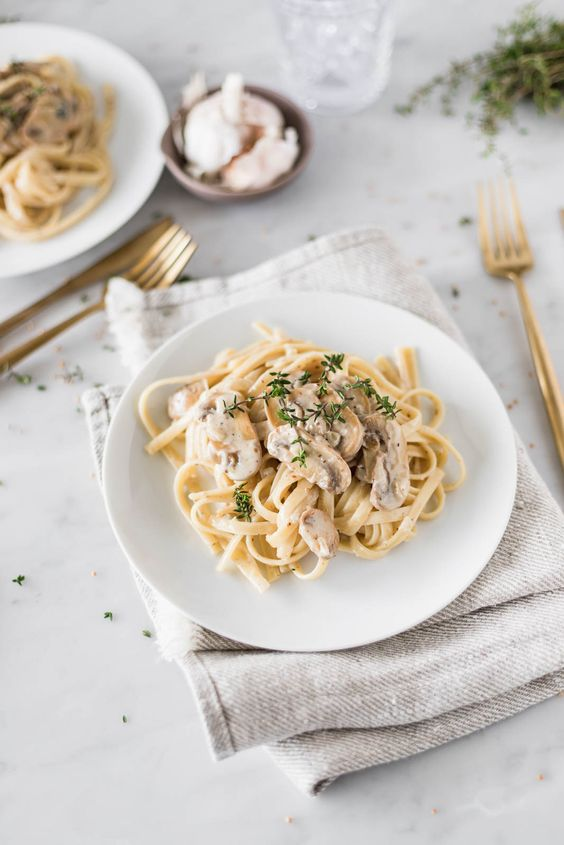

"Sabor Peruano" es un restaurante que ofrece una fusión única entre la cocina peruana y las pastas italianas. Con platos como tallarines con ají de gallina y ravioles de lomo saltado, combina sabores auténticos con creatividad culinaria. Es el lugar perfecto para una experiencia gastronómica sorprendente y deliciosa.
